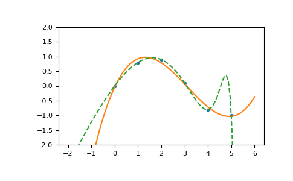

numpy.ma.polyfit¶
-
numpy.ma.polyfit(x, y, deg, rcond=None, full=False, w=None, cov=False)[source]¶ Least squares polynomial fit.
Fit a polynomial
p(x) = p[0] * x**deg + ... + p[deg]of degree deg to points (x, y). Returns a vector of coefficients p that minimises the squared error in the order deg, deg-1, … 0.The
Polynomial.fitclass method is recommended for new code as it is more stable numerically. See the documentation of the method for more information.- Parameters
- xarray_like, shape (M,)
x-coordinates of the M sample points
(x[i], y[i]).- yarray_like, shape (M,) or (M, K)
y-coordinates of the sample points. Several data sets of sample points sharing the same x-coordinates can be fitted at once by passing in a 2D-array that contains one dataset per column.
- degint
Degree of the fitting polynomial
- rcondfloat, optional
Relative condition number of the fit. Singular values smaller than this relative to the largest singular value will be ignored. The default value is len(x)*eps, where eps is the relative precision of the float type, about 2e-16 in most cases.
- fullbool, optional
Switch determining nature of return value. When it is False (the default) just the coefficients are returned, when True diagnostic information from the singular value decomposition is also returned.
- warray_like, shape (M,), optional
Weights to apply to the y-coordinates of the sample points. For gaussian uncertainties, use 1/sigma (not 1/sigma**2).
- covbool or str, optional
If given and not False, return not just the estimate but also its covariance matrix. By default, the covariance are scaled by chi2/sqrt(N-dof), i.e., the weights are presumed to be unreliable except in a relative sense and everything is scaled such that the reduced chi2 is unity. This scaling is omitted if
cov='unscaled', as is relevant for the case that the weights are 1/sigma**2, with sigma known to be a reliable estimate of the uncertainty.
- Returns
- pndarray, shape (deg + 1,) or (deg + 1, K)
Polynomial coefficients, highest power first. If y was 2-D, the coefficients for k-th data set are in
p[:,k].- residuals, rank, singular_values, rcond
Present only if full = True. Residuals of the least-squares fit, the effective rank of the scaled Vandermonde coefficient matrix, its singular values, and the specified value of rcond. For more details, see linalg.lstsq.
- Vndarray, shape (M,M) or (M,M,K)
Present only if full = False and cov`=True. The covariance matrix of the polynomial coefficient estimates. The diagonal of this matrix are the variance estimates for each coefficient. If y is a 2-D array, then the covariance matrix for the `k-th data set are in
V[:,:,k]
- Warns
- RankWarning
The rank of the coefficient matrix in the least-squares fit is deficient. The warning is only raised if full = False.
The warnings can be turned off by
>>> import warnings >>> warnings.simplefilter('ignore', np.RankWarning)
See also
polyvalCompute polynomial values.
linalg.lstsqComputes a least-squares fit.
scipy.interpolate.UnivariateSplineComputes spline fits.
Notes
Any masked values in x is propagated in y, and vice-versa.
The solution minimizes the squared error
E = \sum_{j=0}^k |p(x_j) - y_j|^2
in the equations:
x[0]**n * p[0] + ... + x[0] * p[n-1] + p[n] = y[0] x[1]**n * p[0] + ... + x[1] * p[n-1] + p[n] = y[1] ... x[k]**n * p[0] + ... + x[k] * p[n-1] + p[n] = y[k]
The coefficient matrix of the coefficients p is a Vandermonde matrix.
polyfitissues a RankWarning when the least-squares fit is badly conditioned. This implies that the best fit is not well-defined due to numerical error. The results may be improved by lowering the polynomial degree or by replacing x by x - x.mean(). The rcond parameter can also be set to a value smaller than its default, but the resulting fit may be spurious: including contributions from the small singular values can add numerical noise to the result.Note that fitting polynomial coefficients is inherently badly conditioned when the degree of the polynomial is large or the interval of sample points is badly centered. The quality of the fit should always be checked in these cases. When polynomial fits are not satisfactory, splines may be a good alternative.
References
- 1
Wikipedia, “Curve fitting”, https://en.wikipedia.org/wiki/Curve_fitting
- 2
Wikipedia, “Polynomial interpolation”, https://en.wikipedia.org/wiki/Polynomial_interpolation
Examples
>>> x = np.array([0.0, 1.0, 2.0, 3.0, 4.0, 5.0]) >>> y = np.array([0.0, 0.8, 0.9, 0.1, -0.8, -1.0]) >>> z = np.polyfit(x, y, 3) >>> z array([ 0.08703704, -0.81349206, 1.69312169, -0.03968254])
It is convenient to use poly1d objects for dealing with polynomials:
>>> p = np.poly1d(z) >>> p(0.5) 0.6143849206349179 >>> p(3.5) -0.34732142857143039 >>> p(10) 22.579365079365115
High-order polynomials may oscillate wildly:
>>> p30 = np.poly1d(np.polyfit(x, y, 30)) /... RankWarning: Polyfit may be poorly conditioned... >>> p30(4) -0.80000000000000204 >>> p30(5) -0.99999999999999445 >>> p30(4.5) -0.10547061179440398
Illustration:
>>> import matplotlib.pyplot as plt >>> xp = np.linspace(-2, 6, 100) >>> _ = plt.plot(x, y, '.', xp, p(xp), '-', xp, p30(xp), '--') >>> plt.ylim(-2,2) (-2, 2) >>> plt.show()
